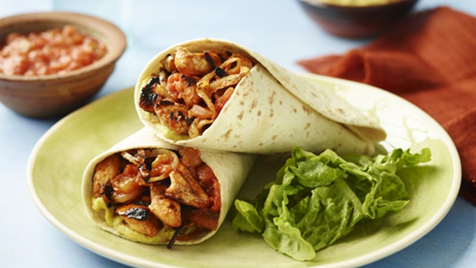

ingredients
- 2 large brests finely sliced
- 1 red onion finely sliced
- 1 red pepper finely sliced
- 1 red chilli finely sliced
- 1 heaped tbsp smoked paprika
- 1 tbsp ground coriander
- pinch of ground cumin
- 2 medium crushed carlic cloves
- 4 tbsp olive oil
- 1 juiced lime
- 4-5 drops tabasco
- 6 medium tortillas
- bag mixed salad
- 300g greated cheese
method
1. heat oven to 200c/180c fan/gas 6 and wrap 6medium tortillas in foil
2. mix paprika, coriander, cumin, garlic cloves, olive oil, lime juice and tabasco togeather in a bowl with a big pinch of salt and pepper
3. stir 2 finely sliced chicken breasts, 1 finely sliced red onion, 1 finely sliced red chilli into the bowl to marinade the chicken
4. heat a griddle pan until smoking hot and add the chicken and marinade to the pan
5. keep everything moning over a high heat for about 5 mins using tongs until you get a nice charred effect. if your griddle pan is to small you may have to do it in two batches
6. to check if the chicken is cooked find the thickest piece and tear it in half- if any part is still ram cok until done
7. put the tortillas in the oven and heat up and serve with the cooked chicken a bag of mixed salad the marinade and cheese
YUM YUM !!!!!!